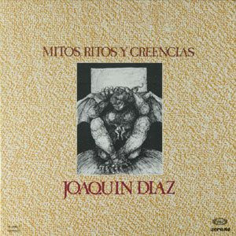

Gonzalo el corrupto en colaboración con Emilio el imputado 
Muestra del romancero tradicional, con Joaquín Díaz
Un cura que dice misa en la iglesia del Pastor se enamoró de una niña, desde que la bautizó. Mientras vivieron sus padres, no la pudo lograr, no. Cuando murieron sus padres, la niña sola quedó. Un día del mes de mayo, peinándose estaba al sol; pasó por allí el mal cura, pasó por allí el traidor. - Vente conmigo, Pepita; Pepita del corazón. La ha agarrado de la mano y a su casa la llevó. Un día de Jueves Santo, con la niña se acostó la puso la mano al pecho, y el cuerpo muerto quedó. - Vecinos, los mis vecinos, si tenéis buen corazón, sacadme de aquí esta niña, donde no la vea Dios. A la mañana siguiente, a decir misa marchó y al tiempo de alzar el cáliz, del cielo bajó una voz. - Detente, traidor, detente; detente padre traidor, que no puedes decir misa, ni consagrar al Señor. A la mañana siguiente, para Roma se marchó a que le confiese el Papa y le eche la absolución. - Que te arrasten cuatro potros desde Roma hasta Aragón. - Esa es poca penitencia; más grande la quiero yo. - Que te suban a una torre y te pongan por reloj. - Esa es poca penitencia; más grande la quiero yo. - Que te metan en un horno hasta que te hagas carbón. - Como era una niña santa, esa me merezco yo.
Un domingo por la tarde según la historia lo cuenta, un capitán general, quinientos soldados lleva. Unos cantan y otros bailan otros llevan grandes penas, entre ellos venían unos que mucha tristeza lleva. - O lo haces por tus padres o lo haces por tu tierra, o lo haces por no servir a su majestad la reina. - No lo hago por mis padres, ni tampoco por mi tierra, tampoco por no servir a su majestad la reina, que lo hago por mi esposa que quedó niña y enferma. - Pues si a eso vas, caballero, siete años te doy de tregua, y al cumplir de los ocho quiero que a las filas vuelvas. Deja la mula que corre coge el caballo que vuela; deja los anchos caminos coge las estrechas sendas. Adelante, adelante, una nuve vio venir. - ¿Dónde vas tú, caballero? ¿Dónde vas tú por ahí? Voy en busca de mi esposa de mi esposa Beatriz. - Pues si a eso vas caballero, a eso no debes de ir. que tu esposa ya está muerta; muerta está que yo la ví. Los frailes que la llevaban eran de San Agustín, y el pelo que ella tenía, la caja quiso cubrir. - Sea verdad o mentira, yo adelante he de seguir. Al revolver de una esquina se le ha espantado el rocín. - ¿De qué te espantas caballero? ¿De qué te espantas, rocín? O eres tú mi esposa, mi esposa Beatriz... Pues si eres tú, mi esposa, ¿cómo no me abrazas?, dí. Brazos con que te abrazaba a la tierra se los dí ojos con que te miraba con el manto los cubrí. Palabra con que te hablaba a la Virgen se las dí; labios con que te besaba los gusanos dieron fin. Si te casas, si te casas casaté en Valladolid, la primera hija que tengas la has de poner Beatriz que por gusto de mis padrinos me lo pusieron a mí. - No me caso, no me caso, tampoco en Valladolid, que me voy a meter fraile, fraile de San Agustín: Todas las misas que diga, todas serán para tí.
Mambrú se fue a la guerra viva el amor no sé cuando vendrá, viva la rosa y el rosal. Si vendrá por la Pascua a por la Trinidad. Por allí viene un paje, ¿qué noticias traerá? - Que Mambrú ya se ha muerto le llevan a enterrar. La caja es de oro fino la tapa de cristal. Encima de la caja un pajarito va, cantando el pío, pío, cantando el pío pa.
CONTESTE
Gonzalo el corrupto en colaboración con Emilio el imputado